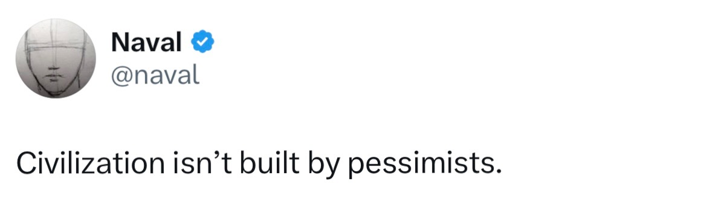

I'm a 3rd year CS student at the University of Carleton and when I was 14 I thought I was going to the NBA
I think blockchains are really cool. I am currently swe intern at Jackal Labs building decentralized cloud storage (not a wildlife conservatory). I was a swe intern at ITMZ, building your digital inventory. Recently met some of the coolest people through Cansbridge :)
I'm also the founder of Carleton Blockchain, a student club empowering students to become the next builders and innovators onchain. So far, we've grown from 0-174 active club members in just days of operation.
When I not scrolling reels, I like to read books, some of my favourites have been the Almanack of Naval Ravikant by Eric Jorgenson, 1984 by George Orwell, and Flow by Mihaly Csikszentmihalyi
I also love listening to music, I'm big on Cpop, traditional rap and, EDM is growing on me
If we share any interests, would love to connect